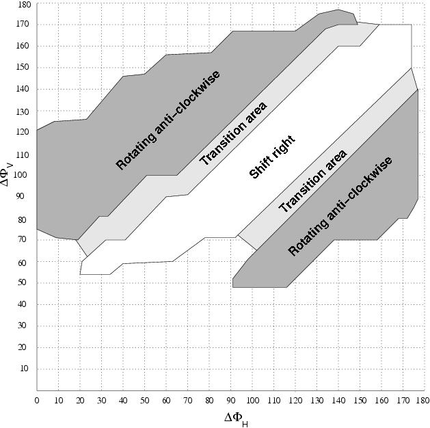

Next: 6 Experiments Up: 5 Locomotion capabilities Previous: 5 Lateral shift


Next: 6
Experiments Up: 5
Locomotion capabilities
Previous: 5
Lateral shift
The lateral shift and rotating
gaits differ only in the value of the Fv and Fh parameters. Their
values determine which gait is performed. A picture showing the
relations between Fv and Fh is drawn in Fig. .
There are three regions. In the middle there are an area in which the
robot perform a lateral shift to the right. There are two parallel
sub-regions in which the robot rotates anti-clockwise. In the
transitional areas, the movement is not well defined. It is a mixture
between both gaits. In the rest of points, no locomotion is
performed.
.
There are three regions. In the middle there are an area in which the
robot perform a lateral shift to the right. There are two parallel
sub-regions in which the robot rotates anti-clockwise. In the
transitional areas, the movement is not well defined. It is a mixture
between both gaits. In the rest of points, no locomotion is
performed.
The further analysis of these regions and the determination of the best points in them is left as a future work.
|
 |
|
Figure: Areas of locomotion for the different parameter Fv, Fh when Fhv=0 is set . |